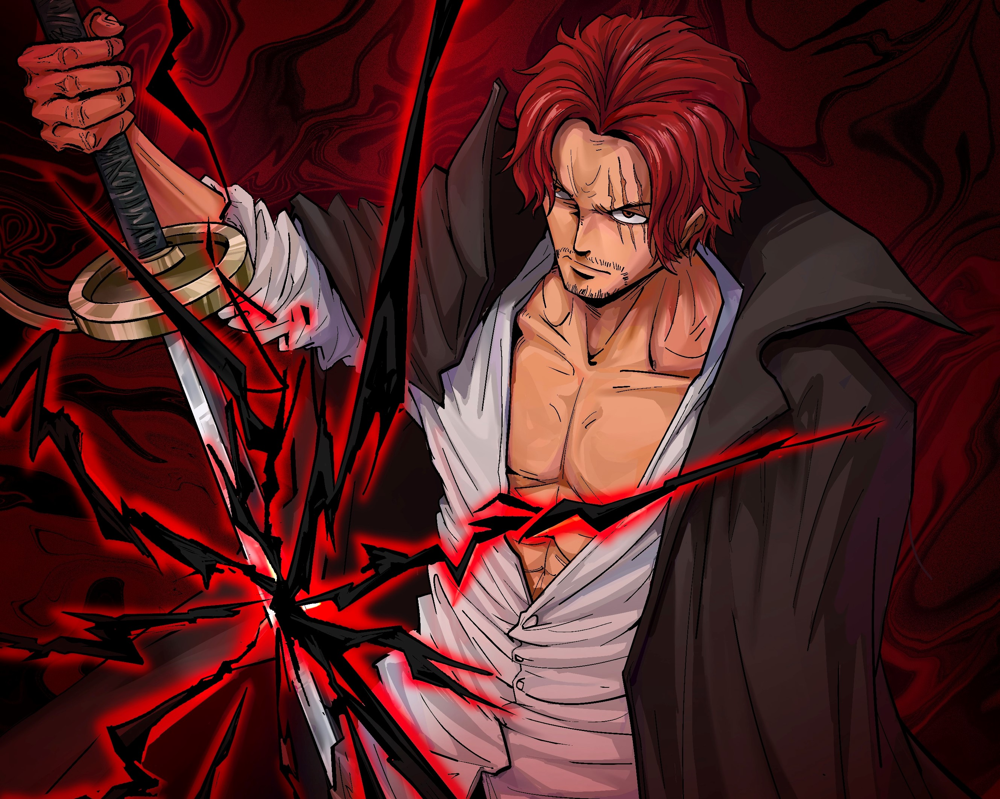

Escanor é o membro mais jovem dos Sete Pecados Capitais.
À noite, ele é conhecido por ter o mais baixo nível de poder não apenas
de todos os Cavaleiros Sagrados da Britânia, mas menor do que o valor registrado de
qualquer outra pessoa. Escanor não gosta de sair durante o dia devido à sua mudança
de personalidade...
Satoru Gojo
Gojo era um mestre no combate corpo-a-corpo,
sendo um especialista em diversas artes marciais e conseguindo
desferir golpes em pontos vitais de seus inimigos. Dependendo do nível de seu oponente,
utilizar jujutsu nem era necessário, já que suas técnicas de luta já davam conta do recado...
Broly
Qual é a história do Broly?
Broly – Wikipédia, a enciclopédia livre
A versão original de Broly nasce no mesmo dia que Goku com um nível de poder de 10.000,
maior do que a maioria dos Saiyans adultos de elite, e está mentalmente instável
como um adulto devido ao choro de Goku na incubadora ao lado dele, assim como eventos
traumáticos durante sua infância...
Madara
Madara nasceu na Era dos Estados Combatentes,
e era o mais velho dos cinco filhos de Tajima Uchiha. Madara e seus irmãos
cresceram no campo de batalha a travaram constantes guerras com os rivais dos Uchiha:
os Senju. Três de seus irmãos morreram ainda jovens, deixando Madara com apenas seu
irmão mais novo, Izuna...
Capitão Levi.
Qual é a história de Levi? Levi nem sempre foi um membro respeitado das
forças armadas dos humanos dentro das muralhas. O garoto nasceu filho de uma prostituta da
cidade subterrânea e, quando sua mãe Kuchel Ackerman faleceu, ficou aos cuidados de seu tio,
Kenny Ackerman.
Shanks.

Shanks nasceu no West Blue em uma vila que produzia vinho.
Ainda com 1 ano, o garoto foi encontrado por Gol D. Roger em um baú de tesouro
em God Valley e até o momento não foi revelado como o personagem foi parar lá,
mas acabou se tornando um membro da tripulação.8